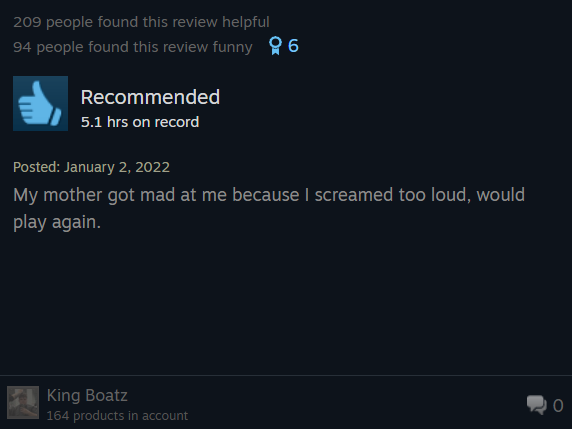
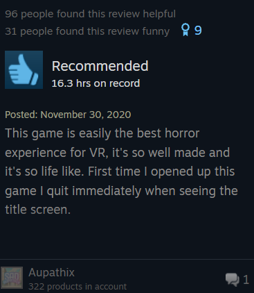
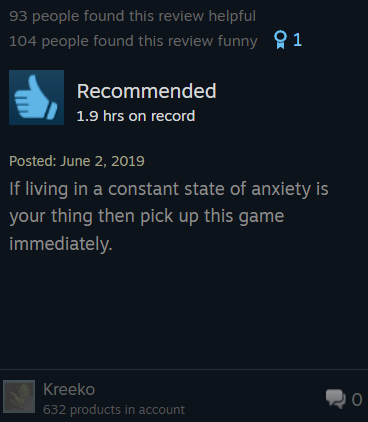
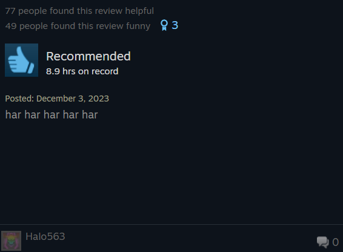
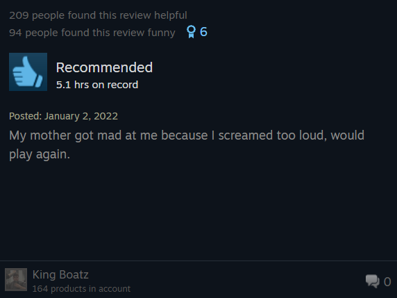
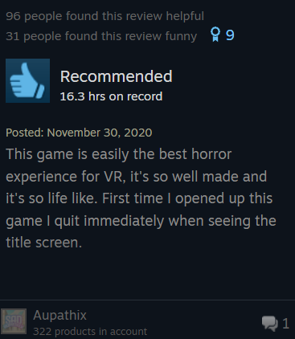
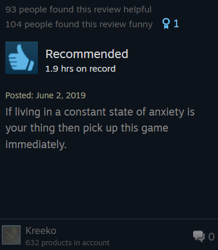
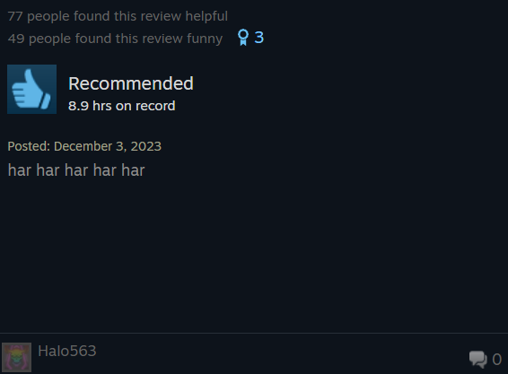

We at Fazbear Entertainment have been the victim of much slander. Freddy's Pizzeria is a safe place for kids and grown ups alike. That doesn't mean we can't have a bit of fun with the rumors though.
Within this game are recreations of several of those ficticious scenarios, lies, that you may have heard about. This includes working as a night guard in several of our iconic locations, as well as the short lived copyright infringing atraction Fazbear's Fright who is to blame for many of these rumors.
Other scenarios include an animatronic repairman, a maitenance worker, and a child, each well designed to help you face your fears and see just how silly and unbelievable all those fake scenarios truly are.
If this is enticing to you, then stop on by to the steam page and get the game! Also available on the meta store!